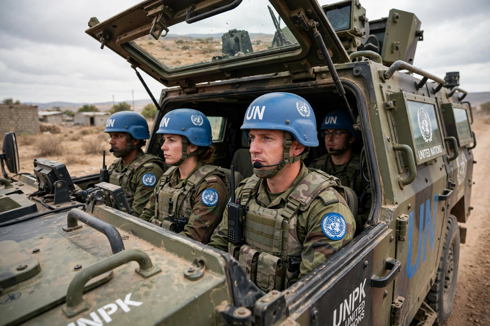

Chapter VII of the United Nations Charter sets out the Security Council's powers to maintain or restore international peace and security. It is titled "Action with Respect to Threats to the Peace, Breaches of the Peace, and Acts of Aggression."
Under Article 39, the Council determines the existence of a threat to the peace, breach of the peace, or act of aggression. Article 41 empowers it to impose measures not involving armed force — sanctions, embargoes, severance of diplomatic relations. If those measures prove inadequate, Article 42 authorises military action by air, sea or land forces. Article 51 preserves the inherent right of self-defence until the Council acts.
Decisions adopted under Chapter VII are binding on all UN member states, giving a "Chapter VII resolution" a legal force that ordinary Council recommendations lack. The chapter has been invoked to authorise sanctions regimes, international criminal tribunals, peacekeeping missions with robust mandates, and military interventions, notably in Korea (1950), Iraq (1990–91), and Libya (2011).
Chapter VII is contrasted with Chapter VI, which covers the pacific settlement of disputes and produces recommendations rather than binding decisions.